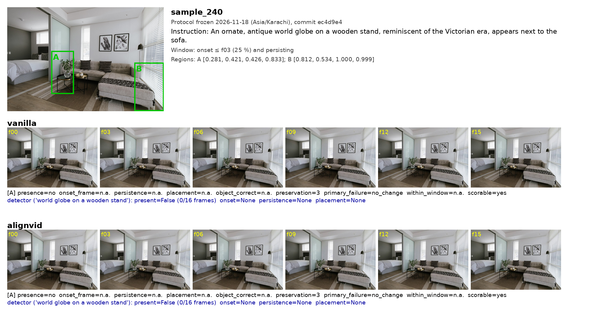
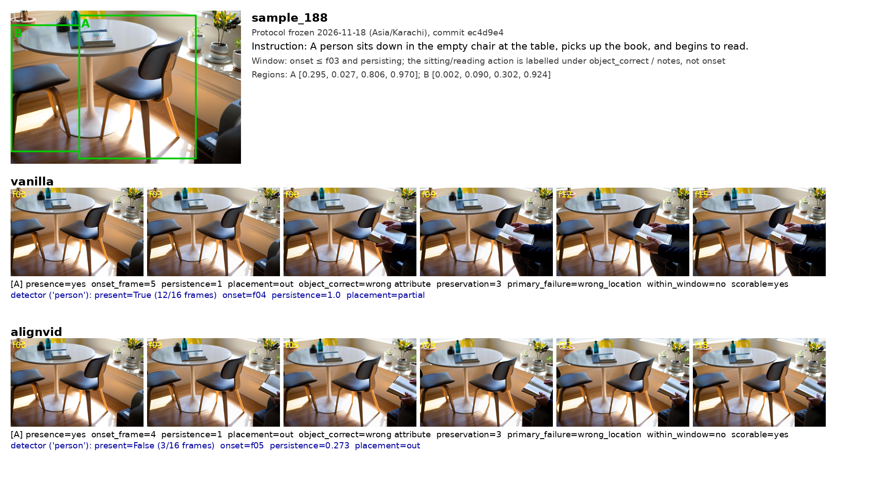
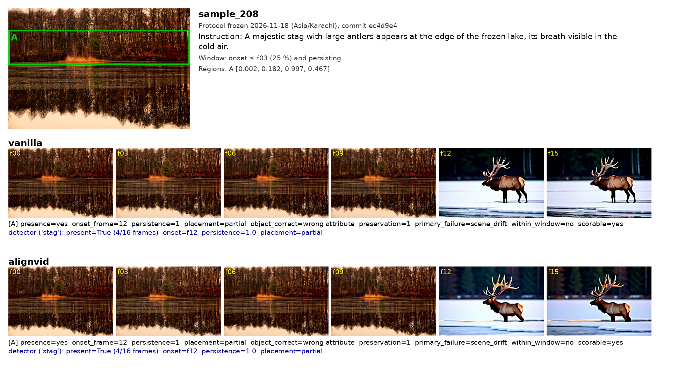
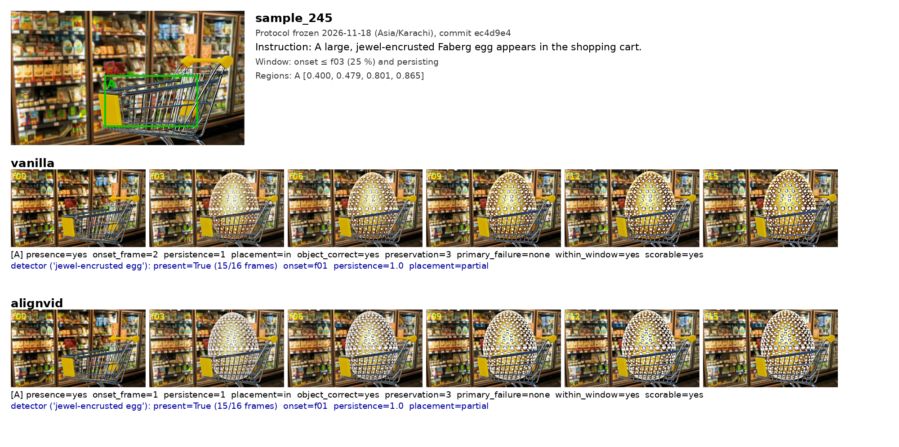
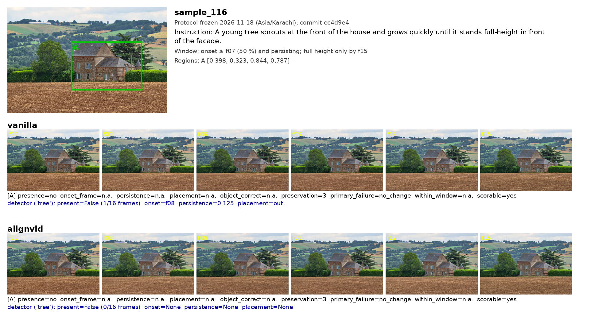

Protocol frozen 2026-11-18 (Asia/Karachi), commit ec4d9e4. Report built 2026-11-23 from commit f236d5a. Labellers: A.
What ran. The whole pipeline, end to end, on Kaggle's free Tesla T4: data selection and intended regions (frozen 2026-11-18), ten generations (five samples, vanilla γ = 1.0 and AlignVid γ = 1.35, one seed, --length 6.0, same settings in both arms), 16-frame extraction, blind human labels by one labeller, a Grounding DINO check with thresholds fixed before the pilot, and the panel below. Generation took 9 h 49 min of GPU quota over two sessions, about 57 min per video; no video failed and all ten are scorable.
What did not run. The matched no-edit arm (optional in the protocol) was not generated, for time; it would cost about 5 h more. A second labeller was not available before submission, so no agreement estimate is given. No VLM judge was run. Running FramePack on the T4 needed three recorded source changes, the largest being fp16 arithmetic with an fp32 residual stream instead of the authors' bf16 (protocol §9, validated on one clip at PSNR 37.1 dB against bf16).
Headline from the labels. Per arm: one clean addition within the window (egg in cart), one object present but in the wrong place (person: only hands and a book at the frame edge, never seated), one scene replaced about 6 s in by a different scene that contains the object (stag), and two videos with no change at all (globe, tree). The two arms received the same label pattern on every sample; with n = 5 and one seed this describes the pilot only. The detector agreed with the human on presence in 9 of 10 videos; the one miss was the partially visible person.
| Item | Value |
|---|---|
| AlignVid repo | github.com/LAW1223/AlignVid, commit 9f3e48d76e19fa44e7ca93f0466ca92fb24775c2 (2026-05-29, single commit), submodule external/AlignVid |
| AlignVid paper | arXiv 2512.01334 v2 (2026-05-28) |
| OmitI2V | HF AIPeanutman/OmitI2V, snapshot 2026-11-18 (367 records), meta.json sha256 abc7099ba16ccb9f48d24b259f2343c48dc447f9907c511008df28a18723937d |
| Backbone | FramePack-F1 (lllyasviel/FramePack_F1_I2V_HY_20250503) |
| Detector | Grounding DINO tiny (IDEA-Research/grounding-dino-tiny), model.safetensors sha256 prefix 1a2412ef99bd74bc |
| Measurement env | Python 3.11.2, torch 2.15.0+cpu, transformers 5.23.0, opencv 5.1.0, numpy 2.4.6, pillow 13.0.0, huggingface_hub 2.4.0 |
| Generation env | recorded in logs/env_<machine>.txt at step C1 |
| DyMoS | not used; github.com/shoxedqBbB/DyMoS (includes Wan2.1 code as of 2026-11) |
| Item | Value |
|---|---|
| Hardware used | Kaggle free tier, Tesla T4 15 GB (one of two), 31 GB RAM, driver 580.178.04; two headless sessions |
| Generation env | Python 3.11.18, torch 2.11.0+cu128, diffusers 0.33.1, transformers 4.46.2, accelerate 1.6.0, numpy 1.26.2 |
| Transformer dtype | fp16 with fp32 residual stream (protocol §9, 2026-11-22); all other models fp16 as upstream |
| Protocol | frozen 2026-11-18 (Asia/Karachi), commit ec4d9e4; this report built from commit f236d5a on 2026-11-23 |





| id | arm | labeller | presence | onset_frame | persistence | placement | object_correct | preservation | primary_failure | secondary_tags | within_window | scorable | notes |
|---|---|---|---|---|---|---|---|---|---|---|---|---|---|
| sample_240 | vanilla | A | no | n.a. | n.a. | n.a. | n.a. | 3 | no_change | n.a. | yes | ||
| sample_240 | alignvid | A | no | n.a. | n.a. | n.a. | n.a. | 3 | no_change | n.a. | yes | ||
| sample_188 | vanilla | A | yes | 5 | 1 | out | wrong attribute | 3 | wrong_location | no | yes | ||
| sample_188 | alignvid | A | yes | 4 | 1 | out | wrong attribute | 3 | wrong_location | no | yes | person not seated in either chair, only hands and book visible at the right edge | |
| sample_208 | vanilla | A | yes | 12 | 1 | partial | wrong attribute | 1 | scene_drift | no | yes | ||
| sample_208 | alignvid | A | yes | 12 | 1 | partial | wrong attribute | 1 | scene_drift | no | yes | ||
| sample_245 | vanilla | A | yes | 2 | 1 | in | yes | 3 | none | yes | yes | ||
| sample_245 | alignvid | A | yes | 1 | 1 | in | yes | 3 | none | yes | yes | ||
| sample_116 | vanilla | A | no | n.a. | n.a. | n.a. | n.a. | 3 | no_change | n.a. | yes | ||
| sample_116 | alignvid | A | no | n.a. | n.a. | n.a. | n.a. | 3 | no_change | n.a. | yes |
Grounding DINO tiny, thresholds 0.45 / 0.35, presence = detected in ≥ 4 of 16 frames, fixed on dev images before the pilot (protocol §8). One row per disagreeing field; persistence counts as agreeing within 0.13 (two frames of 16).
| id | arm | field | human | detector | detector facts | note |
|---|---|---|---|---|---|---|
| sample_188 | vanilla | onset_frame | 5 | 4 | one frame apart; human took the later of two candidate frames (rubric rule); detector box at f04 scored 0.72 | |
| sample_188 | vanilla | placement | out | partial | detector's best box (hands, book and forearm at the right frame edge) overlaps chair region A by 36 % of its area; by eye the visible person is outside both chair regions | |
| sample_188 | alignvid | presence | yes | no | 3/16 frames detected (k = 4); best score 0.531; reference boxes 0; pre-existing boxes flagged 0 | only hands and a book are visible; 'person' fires in 3 of 16 frames at 0.53, one frame short of k = 4. Partial visibility defeats the detector; the human calls it present |
| sample_188 | alignvid | onset_frame | 4 | n.a. | human saw the hands at f04; the detector's first box is f05 | |
| sample_188 | alignvid | persistence | 1 | n.a. | follows from the presence miss: 3 detections over 11 frames from its own onset | |
| sample_188 | alignvid | placement | out | n.a. | ||
| sample_245 | vanilla | onset_frame | 2 | 1 | one frame apart; egg visible at f01 to the detector (0.76); human was not confident until f02 | |
| sample_245 | vanilla | placement | in | partial | the egg is larger than the cart region: 42 % of the detector box lies inside it, below the 50 % 'in' threshold; the human judged 'in' because the egg sits in the cart. Rule-boundary case, see 'Where it broke down' | |
| sample_245 | alignvid | placement | in | partial | same as vanilla: 40 % of the box inside the cart region |
Agreement on presence: 9 of 10 videos (the detector missed the partially visible person in alignvid/sample_188). All three onset disagreements are one frame apart. The two placement disagreements on sample_245 are the same rule-boundary case in both arms: the object is larger than its intended region. For sample_116 the query "tree" matched the trees already in the reference image in all 16 frames of both arms (32 boxes flagged pre-existing and not counted); without the pre-existing check the detector would have reported the tree as present in every frame.
One FramePack process per video on one Tesla T4; wall time includes model loading from local disk. FramePack reported Free VRAM: 14.46 GB, High-VRAM Mode: False, i.e. its low-VRAM path with --gpu_mem 6. Median wall time: vanilla 3322 s, AlignVid 3442 s.
| id | arm | control_scale | length (s) | frames | wall (s) | wall (min) | GPU peak (MiB, nvidia-smi) | RAM peak (GB, RSS) | dtype | start (UTC) |
|---|---|---|---|---|---|---|---|---|---|---|
| sample_240 | vanilla | 1.0 | 6.0 | 181 | 3561.76 | 59.4 | 13037.0 | 28.52 | fp16 | 2026-11-22T04:56:24 |
| sample_240 | alignvid | 1.35 | 6.0 | 181 | 3711.66 | 61.9 | 13037.0 | 29.034 | fp16 | 2026-11-22T20:29:22 |
| sample_188 | vanilla | 1.0 | 6.0 | 181 | 3321.95 | 55.4 | 13037.0 | 28.82 | fp16 | 2026-11-22T05:55:55 |
| sample_188 | alignvid | 1.35 | 6.0 | 181 | 3438.03 | 57.3 | 13037.0 | 28.132 | fp16 | 2026-11-22T21:31:23 |
| sample_208 | vanilla | 1.0 | 6.0 | 181 | 3314.72 | 55.2 | 13037.0 | 28.372 | fp16 | 2026-11-22T06:51:26 |
| sample_208 | alignvid | 1.35 | 6.0 | 181 | 3441.56 | 57.4 | 13037.0 | 28.43 | fp16 | 2026-11-22T22:28:41 |
| sample_245 | vanilla | 1.0 | 6.0 | 181 | 3418.41 | 57.0 | 13155.0 | 28.525 | fp16 | 2026-11-22T07:46:41 |
| sample_245 | alignvid | 1.35 | 6.0 | 181 | 3548.96 | 59.1 | 13155.0 | 28.284 | fp16 | 2026-11-22T23:26:03 |
| sample_116 | vanilla | 1.0 | 6.0 | 181 | 3319.46 | 55.3 | 13037.0 | 28.586 | fp16 | 2026-11-22T08:43:39 |
| sample_116 | alignvid | 1.35 | 6.0 | 181 | 3436.48 | 57.3 | 13037.0 | 28.351 | fp16 | 2026-11-23T00:25:12 |
| # | What | When | Symptom / error | What was tried, outcome |
|---|---|---|---|---|
| 1 | Low-VRAM path, first prompt encode | first Kaggle dry run, 2026-11-21 | CPU/GPU device mismatch: the text encoders were not moved to the GPU on the low-VRAM branch (free VRAM ≤ 60 GB), which the authors did not exercise | two upstream FramePack lines added at both call sites (lowvram-text-encode-1/2); no computed value changes |
| 2 | bf16 dry run, 1.0 s clip | 2026-11-21, 84 s into the run | torch.OutOfMemoryError: Tried to allocate 30.33 GiB in the attention fallback: the T4 (sm_75) has no fused bf16 attention kernel, so PyTorch materialised the full score matrix |
attention computed over query chunks of 512 (sdpa-query-chunks); same softmax(QKᵀ)V, different memory layout; clip then completes |
| 3 | bf16 dry run, 2.0 s clip | 2026-11-22 | completes (exit 0) but 8358 s wall for 73 frames; GPU peak 14.1 GB, RAM 24.9 GB. The T4 emulates bf16 arithmetic | at this speed ten 6 s videos need ≈ 59 GPU-hours against a 30 h/week quota; switched the transformer to fp16 (transformer-dtype-env) |
| 4 | plain fp16 dry run, 2.0 s clip | 2026-11-22 | exit 0 after 587 s, but the clip is all black; invalid value encountered in cast at sampling step 1, after which TeaCache skipped steps 2–24 |
a forward-hook probe (gen/nan_probe.py) located fp16 overflow (> 65 504) at the block-7 residual add, the block-7 gate × MLP product and the block-19 text MLP down-projection; those paths kept in fp32 (fp32-residual); clip then 1546 s, PSNR 37.1 dB vs the bf16 clip of the same seed |
| 5 | Detector presence miss | alignvid/sample_188 | hands and a book at the frame edge: "person" in 3 of 16 frames, k = 4 | reported as a human-vs-detector disagreement (T2); no threshold changed after seeing results |
| 6 | Detector on an existing object | sample_116, both arms | "tree" boxed the trees already in the reference in every frame | pre-existing check (IoU ≥ 0.5 to a reference-image box) flagged all 32 boxes; detector presence = no, matching the human |
| 7 | Kaggle session limits | sessions A and B | 12 h cap per headless run with no output kept if the cap is hit; 30 h/week GPU quota; one 2 h queue wait before session B (not charged) | orchestrator made resumable (finished videos skipped, state restored from the previous session's output); a session time budget stops starting videos that would not finish; neither session reached it |
Unscorable cases: none. Every attempt, including the failed and slow dry runs, has a JSON log with wall time, peak GPU memory, peak RSS, the output tail and the library versions (logs/kaggle/).
Labels
transient has no n.a. value for absent objects; it was recorded as no for the four no-change videos. Add n.a.--length 6.0 produces 181 frames at 24 fps, 7.5 s. The 16-frame sheet spans the whole clip, so the window "onset ≤ f03" still means the first quarter, but the protocol's seconds were not FramePack's seconds. State windows in frames of the sheet, as done, and record the actual duration.Tools
Compute
| Date | Change | Why |
|---|---|---|
| 2026-11-19 | Detector query strings fixed, before any generation: 240 "world globe on a wooden stand", 188 "person", 208 "stag", 245 "jewel-encrusted egg", 116 "tree" ( | §8 did not state the text query per sample; the |
| 2026-11-22 | Generation runs on a remote Windows laptop (RTX 5050, 8 GB) operated by its owner from a self-contained package ( | No remote shell access to the GPU machine is possible (organisation laptop, no admin rights). NCCL does not exist on Windows; the inference script initialises torch.distributed before loading any model. No model, sampling or attention code is changed. |
| 2026-11-22 | Generation moved to Kaggle (Tesla T4 15 GB, 31 GB RAM, Python 3.11 venv) after the laptop proved inaccessible. Two further source patches, applied and sha256-logged by | The RTX 4050 laptop (organisation device, no admin rights, no remote access) could not be used. On a ≤ 60 GB GPU the script takes its low-VRAM path, which the authors did not exercise; without the two lines the dry run fails with a CPU/GPU device mismatch. |
| 2026-11-22 | Kaggle dry run (C3), bf16: the SDPA fallback in | The Tesla T4 (sm_75) has no fused bf16 attention kernel; the math fallback tried to allocate 30 GiB for the score matrix. Chunking over queries computes the same softmax(QKᵀ)V per query row; only memory layout changes. Result: the 2.0 s vanilla dry run of sample_240 completes in bf16 (8358 s wall, GPU peak 14.1 GB, RAM peak 24.9 GB; 73 frames at 24 fps). |
| 2026-11-22 | Transformer compute dtype on Kaggle is fp16 instead of the upstream bf16, with the residual stream, the gated residual updates and the three projections that write into the residual (MLP down-projections, single-block | The T4 has no native bf16 arithmetic: at 8358 s per 2 s clip, ten 6 s videos would need ≈ 59 GPU-hours against a 30 h weekly quota. Plain fp16 gave an all-black clip (NaN from step 1); three probe runs placed the first overflow at the block-7 residual (|x| 29760 hidden / 51328 text, fp16 max 65504), then the block-7 gate × MLP product, then the block-19 text MLP down-projection output. With the patch the same 2 s dry run takes 1546 s wall (5.4× faster; GPU peak 13.0 GB, RAM peak 28.5 GB) and matches the bf16 clip of the same sample and seed at PSNR 37.1 dB (mean abs pixel difference 2.66/255). Both clips and the failed one are kept under |
| 2026-11-23 | The 2026-11-22 entry describing generation on a Windows laptop did not take effect: no video was generated on that machine. All generation (C3 dry runs and both arms) ran on Kaggle under the entries that follow it, with | Recorded so the deviations table reads correctly against the data. |
Scope statement. With n = 5 samples and one seed, no difference between arms can be estimated; the pilot validates the pipeline only.